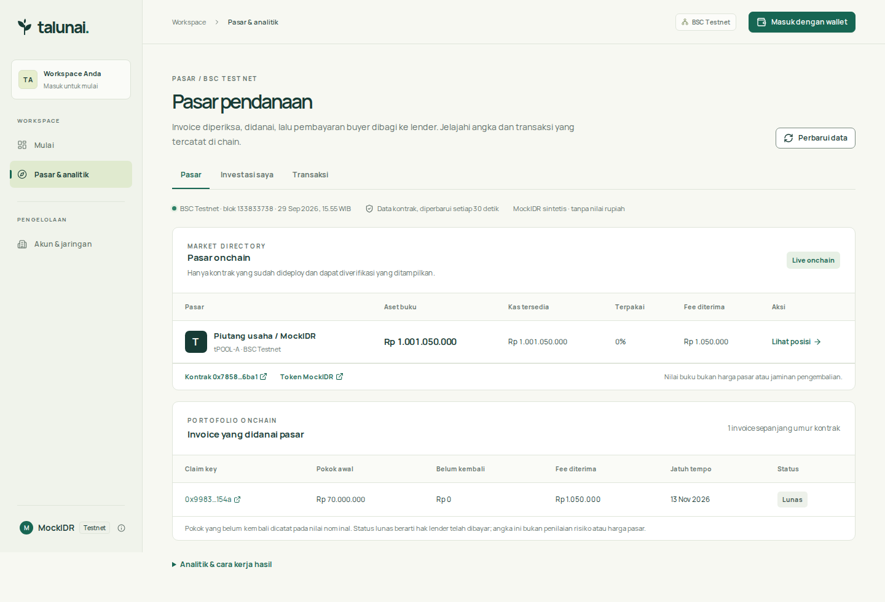

Agent memeriksa bukti, manusia memutuskan, kontrak mendanai dan membagi pembayaran. Satu alur yang terbuka untuk investor.
Saat supplier menunggu buyer membayar, lender perlu tahu apakah invoice benar, siapa yang mengakui kewajiban, dan ke mana uang mengalir.
Dokumen dan klaim perlu diperiksa sebelum modal dialokasikan.
Borrower, buyer, dan verifier memegang keputusan berbeda dengan jejak tindakan yang jelas.
Investor dapat memeriksa dana tersedia, invoice yang didanai, pembayaran, dan fee di chain.
Setiap perpindahan risiko punya pemilik keputusan. Agent memberi alasan dan sumber, lalu manusia mengesahkan.
Borrower mengirim invoice dan bukti.
Agent mengangkat anomali; verifier meninjau.
Borrower dan buyer menandatangani terms yang sama.
Pool mendanai klaim yang lolos batas kontrak.
Buyer membayar; pokok dan fee mengalir ke lender.

Buka kontrak pool di BscScan untuk memeriksa transaksi.
Transaksi testnet yang selesai: buyer membayar invoice 100 juta MockIDR; kontrak membagi hasil dengan waterfall yang dapat diverifikasi.
Eksposur dibatasi 10% per invoice dan 80% total pokok aktif. Buyer bisa gagal bayar; modal dapat terkunci sampai hak lender dilunasi.
Tidak ada APY tetap, penjamin, pasar sekunder, atau mekanisme write-off final pada MVP.
Kontrak, wallet consent, pendanaan, pembayaran, pembagian fee, dan explorer berjalan di BSC Testnet. Berikutnya: aktifkan kredensial OpenRouter untuk inferensi live, lalu uji dengan bukti dari mitra nyata.
Status saat deck dibuat: pipeline agent berjalan dengan provider mock; integrasi OpenRouter tersedia tetapi belum boleh diklaim live sebelum key dan smoke test berhasil.